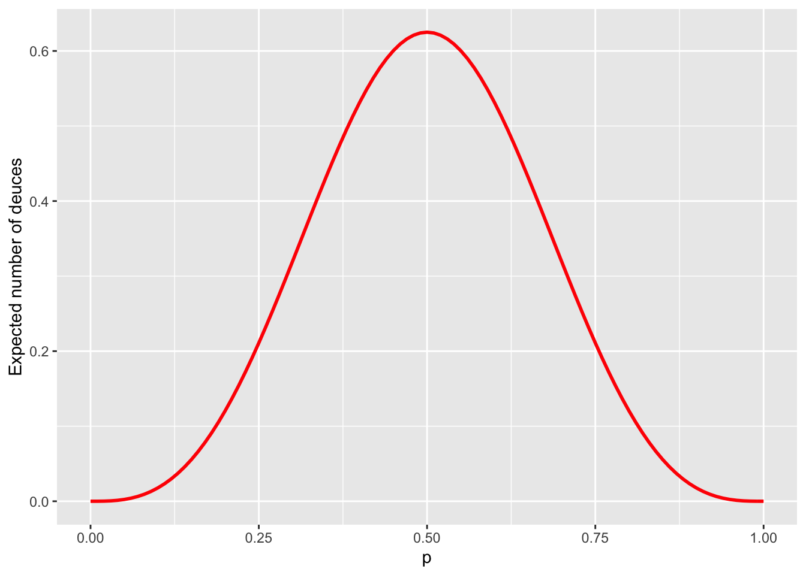

Chapter 2 Absoprtion and Reward
Caveat: From now on, all Markov chains will have finite state spaces.
2.1 Absorption
Remember the “Tennis” example from a few lectures ago and the question we asked there, namely, how does the probability of winning a single point affect the probability of winning the overall game? An algorithm that will help you answer that question will be described in this lecture.
The first step is to understand the structure of the question asked in the light of the canonical decomposition of the previous lecture. In the “Tennis” example, all the states except for the winning ones are transient, and there are two one-element recurrent classes {“Player 1 wins”} and {“Player 2 wins”} The chain starts from a transient state \((0,0)\), moves around a bit, and, eventually, gets absorbed in one of the two. The probability we are interested in is not the probability that the chain will eventually get absorbed. That probability is always \(1\). We are, instead, interested in the probability that the absorption will occur in a particular state - the state “Player 1 wins” (as opposed to “Player 2 wins”) in the “Tennis” example.
A more general version of the problem above is the following: let \(i\in S\) be any state, and let \(j\) be a recurrent state. If the set of all recurrent states is denoted by \(C\), and if \(\tau_{C}\) is the first hitting time of the set \(C\), then \(X_{\tau_{C}}\) denotes the first recurrent state visited by the chain. Equivalently, \(X_{\tau_{C}}\) is the value of \(X\) at (random) time \(\tau_{C}\); its value is the name of the state in which it happens to find itself the first time it hits the set of all recurrent states. For any two states \(i,j\in S\), the \(u_{ij}\) is defined as \[u_{ij}={\mathbb{P}}_i[ X_{\tau_C}=j]={\mathbb{P}}_i[\text{ the first recurrent state visited by $X$ is $j$ }].\] There are several boring situations to discard first:
\(j\) is transient: in this case \(u_{ij}=0\) for any \(i\) because \(j\) cannot possibly be the first recurrent state we hit - it is not even recurrent.
\(j\) is recurrent, and so is \(i\). Since \(i\) is recurrent, i.e., \(i\in C\), we clearly have \(\tau_C=0\). Therefore \(u_{ij} = {\mathbb{P}}_i[ X_0= j]\), and this equals to either \(1\) or \(0\), depending on whether \(i=j\) or \(i\ne j\).
That leaves us with the situation where \(i \in T\) and \(j\in C\) as the interesting one. In many calculations related to Markov chains, the method of first-step decomposition works miracles. Simply, we cut the probability space according to what happened in the first step and use the law of total probability (assuming \(i\in T\), \(j\in C\)) \[\label{equ:system-for-u} \nonumber \begin{split} u_{ij} & ={\mathbb{P}}_i[ X_{\tau_C}=j]=\sum_{k\in S} {\mathbb{P}}[X_{\tau_C}=j|X_0=i, X_1=k] {\mathbb{P}}[ X_1=k|X_0=i]\\ &= \sum_{k\in S} {\mathbb{P}}[X_{\tau_C}=j|X_1=k]p_{ik} \end{split}\] The conditional probability \({\mathbb{P}}[X_{\tau_C}=j|X_1=k]\) is an absorption probability, too. If \(k=j\), then \({\mathbb{P}}[X_{\tau_C}=j|X_1=k]=1\). If \(k\in C\setminus\{j\}\), then we are already in C, but in a state different from \(j\), so \({\mathbb{P}}[ X_{\tau_C}=j|X_1=k]=0\). Therefore, the sum above can be written as \[\label{equ:syst} \begin{split} u_{ij}= \sum_{k\in T} p_{ik} u_{kj} + p_{ij}, \end{split}\] which is a system of linear equations for the family \(( u_{ij}, i\in T, j\in C)\). Linear systems are typically better understood when represented in the matrix form. Let \(U\) be a \(T\times C\)-matrix \(U=(u_{ij}, i\in T, j\in C)\), and let \(Q\) be the portion of the transition matrix \(P\) corresponding to the transitions from \(T\) to \(T\), i.e. \(Q=(p_{ij},i\in T, j\in T)\), and let \(R\) contain all transitions from \(T\) to \(C\), i.e., \(R=(p_{ij})_{i\in T, j\in C}\). If \(P_C\) denotes the matrix of all transitions from \(C\) to \(C\), i.e., \(P_C=(p_{ij}, i\in C, j\in C)\), then the canonical form of \(P\) looks like this: \[P= \begin{bmatrix} P_C & 0 \\ R & Q \end{bmatrix}.\] The system now becomes: \[U= QU+R,\text{ i.e., } (I-Q) U = R.\] If the matrix \(I-Q\) happens to be invertible, we are in business, because we then have an explicit expression for \(U\): \[U= (I-Q)^{-1} R.\] So, is \(I-Q\) invertible? It is when the state space \(S\) is finite; here is the argument, in case you are interested:
Theorem. When the state space \(S\) is finite, the matrix \(I-Q\) is invertible and \[ \begin{split} (I-Q)^{-1} = \sum_{n=0}^{\infty} Q^n. \end{split}\] Moreover, the entry at the position \(i,j\) in \((I-Q)^{-1}\) is the expected total number of visits to the state \(j\), for a chain started at \(i\).
Proof. For \(k\in{\mathbb{N}}\), the matrix \(Q^k\) is the same as the submatrix corresponding to the transient states of the full \(k\)-step transition matrix \(P^k\). Indeed, going from a transient state to another transient state in \(k\) steps can only happen via other transient states (once we hit a recurrent class, we are stuck there forever).
Using the same idea as in the proof of Proposition \[pro:geom-markov\] from the set of notes on classification of states, we can conclude that for any two transient states \(i\) and \(j\), we have (remember \({\mathbb{E}}_i[ \mathbf{1}_{\{X_n = j\}}] = {\mathbb{P}}_i[X_n = j] = p_{ij}^{(n)}\)) \[{\mathbb{E}}_i[ \sum_{n=0}^{\infty} \mathbf{1}_{\{X_n = j\}}] = \sum_{n\in\Nz} p^{(n)}_{ij} = \sum_{n\in\Nz} q^{(n)}_{ij} = (\sum_{n\in{\mathbb{N}}_0} Q^n)_{ij}.\] On the other hand, the left hand side above is simply the expected number of visits to the state \(j\), if we start from \(i\). Since both \(i\) and \(j\) are transient, this number will either be \(0\) (if the chain never even reaches \(j\) from \(i\)), or a geometric random variable (if it does). In either case, the expected value of this quantity is finite, and, so \[\sum_{n\in{\mathbb{N}}_0} q^{(n)}_{ij}<\infty.\] Therefore, the matrix sum \(F = \sum_{n\in{\mathbb{N}}_0} Q^n\) is well defined, and it remains to make sure that \(F = (I-Q)^{-1}\), which follows from the following simple computation: \[QF = Q \sum_{n\in{\mathbb{N}}_0} Q^n = \sum_{n\in{\mathbb{N}}_0} Q^{n+1} = \sum_{n\in{\mathbb{N}}} Q^n = \sum_{n\in{\mathbb{N}}_0} Q^n - I = F - I. \text{ Q.E.D.}\]
When the inverse \((I-Q)^{-1}\) exists (like in the finite case), it is called the fundamental matrix of the Markov chain.
Before we turn to the “Tennis” example, let us analyze a simpler case of Gambler’s ruin with \(a=3\).
What is the probability that a gambler coming in at \(x=\$1\) in a Gambler’s ruin problem with \(a=3\) succeeds in “getting rich”? We do not assume that \(p=\tfrac{1}{2}\).
The states \(0\) and \(3\) are absorbing, and all the others are transient. Therefore \(C_1=\{0\}\), \(C_2=\{3\}\) and \(T=T_1=\{1,2\}\). The transition matrix \(P\) in the canonical form (the rows and columns represent the states in the order \(0,3,1,2\)) \[P= \begin{bmatrix} 1 & 0 & 0 & 0\\ 0 & 1 & 0 & 0\\ 1-p & 0 & 0 & p\\ 0 & p & 1-p & 0 \end{bmatrix}\] Therefore, \[R= \begin{bmatrix} 1-p & 0 \\ 0 & p \end{bmatrix} \text{ and } Q= \begin{bmatrix} 0 & p \\ 1-p & 0 \end{bmatrix}.\] The matrix \(I-Q\) is a \(2\times 2\) matrix so it is easy to invert: \[(I-Q)^{-1}= \frac{1}{1-p+p^2}\begin{bmatrix} 1 & p \\ 1-p & 1 \end{bmatrix}.\] So \[U= \frac{1}{1-p+p^2}\begin{bmatrix} 1 & p \\ 1-p & 1 \end{bmatrix} \begin{bmatrix} 1-p & 0 \\ 0 & p \end{bmatrix} = \begin{bmatrix} \frac{1-p}{1-p+p^2} & \frac{p^2}{1-p+p^2} \\ \frac{(1-p)^2}{1-p+p^2} & \frac{p}{1-p+p^2} \\ \end{bmatrix}.\] Therefore, for the initial “wealth” is 1, the probability of getting rich before bankruptcy is \(u_{13}=p^2/(1-p+p^2)\) (the entry in the first row (\(x=1\)) and the second column (\(a=3\)) of \(U\).)
Find the probability of winning a whole game of Tennis, for a player whose probability of winning a single rally is \(p=0.45\).
In the “Tennis” example, the transition matrix is \(20\times 20\), with only 2 recurrent states (each in its own class). In order to find the matrix \(U\), we (essentially) need to invert an \(18\times 18\) matrix and that is a job for a computer. We start with an R function which produces the transition matrix \(P\) as a function of the single-rally probability \(p\). Even though we only care about \(p=0.45\) here, the extra flexibility will come in handy soon:
S= c("0-0", "0-15", "15-0", "0-30", "15-15", "30-0", "0-40", "15-30",
"30-15", "40-0", "15-40", "30-30", "40-15", "40-30", "30-40",
"40-40", "40-A", "A-40", "P1", "P2")
tennis_P = function(p) {
matrix(c(
0,1-p,p,0,0,0,0,0,0,0,0,0,0,0,0,0,0,0,0,0,
0,0,0,1-p,p,0,0,0,0,0,0,0,0,0,0,0,0,0,0,0,
0,0,0,0,1-p,p,0,0,0,0,0,0,0,0,0,0,0,0,0,0,
0,0,0,0,0,0,1-p,p,0,0,0,0,0,0,0,0,0,0,0,0,
0,0,0,0,0,0,0,1-p,p,0,0,0,0,0,0,0,0,0,0,0,
0,0,0,0,0,0,0,0,1-p,p,0,0,0,0,0,0,0,0,0,0,
0,0,0,0,0,0,0,0,0,0,p,0,0,0,0,0,0,0,0,1-p,
0,0,0,0,0,0,0,0,0,0,1-p,p,0,0,0,0,0,0,0,0,
0,0,0,0,0,0,0,0,0,0,0,1-p,p,0,0,0,0,0,0,0,
0,0,0,0,0,0,0,0,0,0,0,0,1-p,0,0,0,0,0,p,0,
0,0,0,0,0,0,0,0,0,0,0,0,0,0,p,0,0,0,0,1-p,
0,0,0,0,0,0,0,0,0,0,0,0,0,p,1-p,0,0,0,0,0,
0,0,0,0,0,0,0,0,0,0,0,0,0,1-p,0,0,0,0,p,0,
0,0,0,0,0,0,0,0,0,0,0,0,0,0,0,1-p,0,0,p,0,
0,0,0,0,0,0,0,0,0,0,0,0,0,0,0,p,0,0,0,1-p,
0,0,0,0,0,0,0,0,0,0,0,0,0,0,0,0,1-p,p,0,0,
0,0,0,0,0,0,0,0,0,0,0,0,0,0,0,p,0,0,0,1-p,
0,0,0,0,0,0,0,0,0,0,0,0,0,0,0,1-p,0,0,p,0,
0,0,0,0,0,0,0,0,0,0,0,0,0,0,0,0,0,0,1,0,
0,0,0,0,0,0,0,0,0,0,0,0,0,0,0,0,0,0,0,1),
byrow=T, ncol = 20 )
}The positions of the initial state “0-0” in the state-space vector
S is \(1\), and the
positions of the two absorbing states “P1” and “P2” are \(19\) and \(20\).
Therefore the matrices \(Q\) and \(R\) are obtained by vector indexing as follows:
P = tennis_P(0.45)
Q = P[1:18, 1:18]
R = P[1:18, 19:20]Linear systems are solved by using the command solve in R:
I = diag(18) # the identity matrix the same size as Q
U = solve(I - Q, R)
U[1, ]
## [1] 0.3768515 0.6231485Therefore, the probability that Player 1 wins the entire rally is about \(0.377\). Note
that this number is smaller than \(0.45\), so it appears that the game is
designed to make it easier for the better player to win. For more evidence,
let’s draw the graph of this probability for several values of \(p\)
(sapply is the version of apply for vectors):
prob_win = function(p) {
if (p %in% c(0, 1))
return(p)
P = tennis_P(p)
Q = P[1:18, 1:18]
R = P[1:18, 19:20]
U = solve(diag(18) - Q, R)
U[1, 1]
}
ps = seq(0, 1, by = 0.01)
prob_game = sapply(ps, prob_win)A graph of p vs. prob_game, where the dashed line is the line \(y=x\) looks like this:

Using a symbolic software package (like Mathematica) we can even get an explicit expression for the win probability in this case: \[\begin{align} u_{(0,0)\ \ "P1\ wins"} = p^4 + 4 p^4 q + 10 p^4 q^2 + \frac{20 p^5 q^3}{1-2pq}. \end{align}\] Actually, you don’t really need computers to derive the expression above. Can you do it by finding all the ways in which the game can be won in \(n=4,5,6,8, 10, 12, \dots\) rallies, computing their probabilities, and then adding them all up?
2.2 Expected reward
Suppose that each time you visit a transient state \(j\in T\) you receive a reward \(g(j)\in{\mathbb{R}}\). The name “reward” is a bit misleading since the negative \(g(j)\) corresponds more to a fine than to a reward; it is just a name, anyway. Can we compute the expected total reward before absorption \[v_i={\mathbb{E}}_i[ \sum_{n=0}^{\tau_{C}-1} g(X_n)] ?\] And if we can, what is it good for? Many things, actually, as the following two special cases show:
If \(g(j)=1\) for all \(j\in T\), then \(v_i\) is the expected time until absorption. We will calculate \(v_{(0,0)}\) for the “Tennis” example to compute the expected duration of a tennis game.
If \(g(k)=1\) and \(g(j)=0\) for \(j\not =k\), then \(v_i\) is the expected number of visits to the state \(k\) before absorption. In the “Tennis” example, if \(k=(40,40)\), the value of \(v_{(0,0)}\) is the expected number of times the score \((40,40)\) is seen in a tennis game.
We compute \(v_i\) using the first-step decomposition: \[\label{equ:} % \nonumber \begin{split} v_i &={\mathbb{E}}_i[ \sum_{n=0}^{\tau_C - 1} g(X_n)] = g(i)+ {\mathbb{E}}_i[ \sum_{n=1}^{\tau_C - 1} g(X_n)]\\ &= g(i)+ \sum_{k\in S} {\mathbb{E}}_i[ \sum_{n=1}^{\tau_C - 1} g(X_n)|X_1=k] {\mathbb{P}}_i[X_1=k]\\ & = g(i)+ \sum_{k\in S} p_{ik}{\mathbb{E}}_i[ \sum_{n=1}^{\tau_C - 1} g(X_n)|X_1=k] \end{split}\] If \(k\in T\), then the Markov property implies that \[{\mathbb{E}}_i[ \sum_{n=1}^{\tau_C - 1} g(X_n)|X_1=k]={\mathbb{E}}_k[ \sum_{n=0}^{\tau_C - 1} g(X_n)]=v_k.\] When \(k\not\in T\), then \[{\mathbb{E}}_i[ \sum_{n=1}^{\tau_C - 1} g(X_n)|X_1=k]=0,\] because we have “arrived” and no more rewards are going to be collected. Therefore, for \(i\in T\) we have \[v_i=g(i)+\sum_{k\in T} p_{ik} v_k.\] If we organize all \(v_i\) and all \(g(i)\) into column vectors \(v=(v_i, i\in T)\), \(g=(g(i), i\in T)\), we get \[v=Qv+g, \text{ i.e., } v=(I-Q)^{-1} g = Fg.\]
Having derived the general formula for various rewards, we can provide another angle to the interpretation of the fundamental matrix \(F\). Let us pick a transient state \(j\) and use the reward function \(g\) given by \[g(k)=\mathbf{1}_{\{k=j\}}= \begin{cases} 1, & k=j \\ 0,& k\not= j. \end{cases}\] By the discussion above, the \(i^{th}\) entry in \(v=(I-Q)^{-1} g\) is the expected reward when we start from the state \(i\). Given the form of the reward function, \(v_i\) is the expected number of visits to the state \(j\) when we start from \(i\). On the other hand, as the product of the matrix \(F=(I-Q)^{-1}\) and the vector \(g=(0,0,\dots, 1, \dots, 0)\), \(v_i\) is nothing but the \((i,j)\)-entry in \(F=(I-Q)^{-1}\).
Let’s illustrate these ideas on some of our example chains:What is the expected duration of a game of tennis? Compute it for several values of the parameter \(p\).
The main idea is to perform a reward computation with \(g(i)=1\) for all transient states \(i\). The R code is very similar to the one in the absorption example:
expected_duration = function(p) {
if (p %in% c(0, 1))
return(4)
P = tennis_P(p)
Q = P[1:18, 1:18]
g = matrix(1, nrow = 18, ncol = 1)
v = solve(diag(18) - Q, g)
v[1, ]
}
ps = seq(0, 1, by = 0.01)
duration_game = sapply(ps, expected_duration)As above, here is the graph of p vs. duration_game:

The maximum of the curve about equals to \(6.75\), and is achieved when the players are evenly matched (\(p=0.5\)). Therefore, a game between fairly equally matched opponents lasts \(6.75\). The game cannot be shorter than \(4\) rallies and that is exactly the expected duration when one player wins with certainty in each rally.
What is the expected number of “deuces”, i.e., scores \((40,40)\)? Compute it for several values of the parameter \(p\).
This can be computed exactly as above, except that now the reward function is given by \[\begin{align} g(i) = \begin{cases} 1, & \text{ if } i = (40,40),\\ 0, & \text{ otherwise.} \end{cases} \end{align}\] Since the code is almost identical to the code from the last example, we skip it here and only draw the graph:  As expected, there are no dueces when \(p=0\) or \(p=1\), and the maximal expected number of dueces - \(0.625\) - occurs when \(p=1/2\).
These numbers are a bit misleading, though, and, when asked, people would usually give a higher estimate for this expectation. The reason is that the expectation is a poor summary of for the full distribution of the number of deuces. The best way yo to get a feeling for the entire distribution is to run some simulations. Here is the histogram of \(10000\) simulations of a game of tennis for the most interesting case \(p=0.5\):

We see that most of the games have no deuces. However, in the cases where a deuce does happen, it is quite possible it will be repeated. A sizable number of draws yielded \(4\) of more deuces.
We end with another example from a different area:
Alice plays the following game. She picks a pattern consisting of three letters from the set \(\{H,T\}\), and then tosses a fair coin until her pattern appears for the first time. If she has to pay \(\$1\) for each coin toss, what is the expected cost she is going to incur? What pattern should she choose to minimize that cost?
We start by choosing a pattern, say \(HTH\), and computing the number of coin tosses Alice expects to make before it appears. This is just the kind of computation that can be done using our absorption-and-reward techniques, if we can find a suitable Markov chain. It turns out that the following will do (green arrows stand for probability \(1/2\)):
As Alice tosses the coin, she keeps track of the largest initial portion of her pattern that appears at last several places of the sequence of past tosses. The state \(0\) represents no such portion (as well as the intial state), while \(HT\) means that the last two coin tosses were \(H\) and \(T\) (in that order) so that it is possible to end the game by tossing a \(H\) next. On the other hand, if the last toss was a \(T\), there is no need to keep track of that - it is as good as \(0\).
Once we have this chain, all we have to do is perform the absorption and reward computation with the reward function \(g\equiv 1\). The \(Q\)-matrix of this chain (with the transient states ordered as \(0, H, HT\)) is \[Q = \begin{bmatrix} 1/2 & 1/2 & 0 \\ 0 & 1/2 & 1/2 \\ 1/2 & 0 & 0\\ \end{bmatrix}\] and the fundamental matrix \(F\) turns out to be \[F = \begin{bmatrix} 4 & 4 & 2 \\ 2 & 4 & 2 \\ 2 & 2 & 2 \\ \end{bmatrix} .\] Therefore, the required expectation is the sum of all the elements on the first row, i.e., \(10\).
Let us repeat the same for the pattern \(HHH\). We build a similar Markov chain:
We see that there is a subtle difference. One transition from the state \(H\), instead of going back to itself, is directed towards \(0\). It is clear from here, that this can only increase Alice’s cost. Indeed, the fundamental matrix is now given by \[F = \begin{bmatrix} 8 & 4 & 2 \\ 6 & 4 & 2 \\ 4 & 2 & 2 \\ \end{bmatrix},\] and the expected number of tosses before the first appearance of \(HHH\) comes out as \(14\).
Can you do this for other patterns? Which one should Alice choose to minimize her cost?
2.3 Additional Problems for Chapter 7
Note: do not use simulations in any of the problems below. Using R (or other software) to manipulate matrices or perform other numerical computation is fine.
The fundamental matrix associated to a finite Markov chain is \(F = \begin{bmatrix} 3 & 3 \\ 3/2 & 3\end{bmatrix}\), with the first row (and column) corresponding to the state \(A\) and the second to \(B\). Some of the following statements are true and the others are false. Find which ones are true and which are false; give explanations for your choices.
The chain has \(2\) recurrent states.
If the chain starts in \(A\), the expected number of visits to \(B\) before hitting the first recurrent state is \(3\).
If the chain is equally likely to start from \(A\) or \(B\), the expected number of steps it will take before it hits its first recurrent state is \(\frac{21}{4}\).
\({\mathbb{P}}_A[X_1=C] =0\) for any recurrent state \(C\).
ar-prob-01
In a Markov chain with a finite number of states, the fundamental matrix is given by \[F=\begin{bmatrix} 3 & 4 \\ \tfrac{3}{2} & 4\end{bmatrix}.\] The initial distribution of the chain is uniform on all transient states. Compute the expected value of \[\tau_C=\min \{ n\in{\mathbb{N}}_0\, : \, X_n\in C\},\] where \(C\) denotes the set of all recurrent states.
Using the reward \(g\equiv 1\), the vector \(v\) of expected values of \(\tau_C\), where each entry corresponds to a different transient initial state is \[v= F g= \begin{bmatrix} 3 & 4 \\ \tfrac{3}{2} & 4\end{bmatrix} \begin{bmatrix} 1 \\ 1 \end{bmatrix} = \begin{bmatrix} 7 \\ \tfrac{11}{2} \end{bmatrix}\] The initial distribution puts equal probabilities on the two transient states, so, by the law of total probability, \[{\mathbb{E}}[\tau_C]= \tfrac{1}{2}\times 7 + \tfrac{1}{2}\times \tfrac{11}{2}= \tfrac{25}{4}.\]
Consider “Gambler’s ruin” model with parameter \(p\). Write code that will compute the probability that the gambler will go bankrupt before her wealth reaches \(\$1000\) for each initial wealth \(x = 0,1,\dots, 1000\). Plot the graphs for \(0.4, 0.49, 0.499\) and \(0.5\) on top of each other.
We use R and start by constructing the matrices \(Q\) and \(R\) and the solving the system \((I-Q) U = R\).
win_probability = function(p) {
P = matrix(0, ncol = 1001, nrow = 1001)
P[1, 1] = 1
P[1001, 1001] = 1
for (i in 2:1000) {
P[i, i - 1] = 1 - p
P[i, i + 1] = p
}
Q = P[2:1000, 2:1000]
R = P[2:1000, c(1, 1001)]
solve(diag(999) - Q, R)[, 2]
}
par(lwd = 2)
plot(win_probability(0.4), ylab = "probability of winning $1000", xlab = "Initial wealth",
type = "l", col = "maroon", ylim = c(0, 1), lwd = 2)
points(win_probability(0.49), type = "l", col = "darkblue", lwd = 2)
points(win_probability(0.499), type = "l", col = "seagreen", lwd = 2)
points(win_probability(0.5), type = "l", col = "black", lwd = 2)
legend(10, 0.9, legend = c("p=0.5", "p=0.499", "p=0.49", "p=0.4"), col = c("black",
"seagreen", "darkblue", "maroon"), lty = 1, lwd = 2)
A basketball player is shooting a series of free throws. The probability of hitting any single one is \(1/2\), and the throws are independent of each other. What is the expected number of throws the player will attempt before hitting 3 free throws in a row (including those 3)?
Let \(X_n\) be the size of the longest winning streak so far. The value of \(X_{n+1}\) then equals \(1+X_n\) with probability \(1/2\) and \(0\) with probability \(1/2\) so that the transition matrix of the Markov chain \(X\), on the state space \(S=\{0,1,2,3\}\) is \[P = \begin{bmatrix} 1/2 & 1/2 & 0 & 0 \\ 1/2 & 0 & 1/2 & 0 \\ 1/2 & 0 & 0 & 1/2 \\ 0 & 0 & 0 & 1\end{bmatrix}\] where we made the state \(3\) absorbing. The required expectation is \(v_0\), where \(v_i\) is the expected number of steps until absorption starting from the state \(i\). The system of equations satisfied by \(v\) is \[\begin{aligned} v_0 &= 1+ 1/2 v_0 + 1/2 v_1 \\ v_1 &= 1+ 1/2 v_0 + 1/2 v_2 \\ v_2 &= 1+ 1/2 v_0 \end{aligned}\] From here, we get \[\begin{align} v_0 &= 1+ 1/2 v_0 + 1/2 v_1 = 1 + 1/2 v_0 + 1/2 (1+1/2 v_0 + 1/2 v_2)\\ &= 1 + 1/2 v_0 + 1/2 ( 1 + 1/2 v_0 + 1/2(1+1/2 v_0)) \\ &= (1+1/2+1/4) + v_0 (1/2+ 1/4+1/8) = \frac{7}{4} + \frac{7}{8} v_0 \end{align}\] so that \(v_0 = 14\).
Let \(\{X_n\}_{n\in {\mathbb{N}}_0}\) be a Markov chain with the following transition matrix \[P= \begin{bmatrix} 1/2 & 1/2 & 0 \\ 1/3 & 1/3 & 1/3 \\ 0 & 0 & 1\\ \end{bmatrix}\] Suppose that the chain starts from the state \(1\).
What is expected time that will pass before the chain first hits \(3\)?
What is the expected number of visits to state \(2\) before \(3\) is hit?
Would your answers to 1. and 2. change if we replaced values in the third row of \(P\) by any other values (as long as \(P\) remains a stochastic matrix)? Would \(1\) and \(2\) still be transient states?
Use the idea of part 3. to answer the following question. What is the expected number of visits to the state \(2\) before a Markov chain with transition matrix \[P= \begin{bmatrix} 17/20 & 1/20 & 1/10\\ 1/15 & 13/15 & 1/15\\ 2/5 & 4/15 & 1/3\\ \end{bmatrix}\] hits the state \(3\) for the first time (the initial state is still \(1\))? Remember this trick for your next exam.
The states 1 and 2 are transient and 3 is recurrent, so the canonical decomposition is \(C=\{3\}\), \(T=\{1,2\}\) and the canonical form of the transition matrix is \[P= \begin{bmatrix} 1 & 0 & 0 \\ 0 & 1/2 & 1/2 \\ 1/3 & 1/3 & 1/3 \end{bmatrix}\] The matrices \(Q\) and \(R\) are given by \[Q= \begin{bmatrix} 1/2 & 1/2 \\ 1/3 & 1/3 \end{bmatrix}, R=\begin{bmatrix} 0 \\ 1/3 \end{bmatrix},\] and the fundamental matrix \(F=(I-Q)^{-1}\) is \[F= \begin{bmatrix} 4 & 3 \\ 2 & 3 \end{bmatrix}.\]
No, all states would be recurrent. The moral of the story that the absorption calculations can be used even in the settings where all states are recurrent. You simply need to adjust the probabilities, as shown in the following part of the problem.
A fair 6-sided die is rolled repeatedly, and for \(n\in{\mathbb{N}}\), the outcome of the \(n\)-th roll is denoted by \(Y_n\) (it is assumed that \(\{Y_n\}_{n\in{\mathbb{N}}}\) are independent of each other). For \(n\in{\mathbb{N}}_0\), let \(X_n\) be the remainder (taken in the set \(\{0,1,2,3,4\}\)) left after the sum \(\sum_{k=1}^n Y_k\) is divided by \(5\), i.e. \(X_0=0\), and \[%\label{} \nonumber \begin{split} X_n= \sum_{k=1}^n Y_k \ (\,\mathrm{mod}\, 5\,),\text{ for } n\in{\mathbb{N}}, \end{split}\] making \(\{X_n\}_{n\in {\mathbb{N}}_0}\) a Markov chain on the state space \(\{0,1,2,3,4\}\) (no need to prove this fact).
Write down the transition matrix of the chain.
Classify the states, separate recurrent from transient ones, and compute the period of each state.
Compute the expected number of rolls before the first time \(\{X_n\}_{n\in {\mathbb{N}}_0}\) visits the state \(2\), i.e., compute \({\mathbb{E}}[\tau_2]\), where \[\tau_2=\min \{ n\in{\mathbb{N}}_0\, : \, X_n=2\}.\]
Compute \({\mathbb{E}}[\sum_{k=0}^{\tau_2-1} X_k]\).
Q = 1/6*matrix(
c(1,2,1,1,
1,1,1,1,
1,1,1,2,
2,1,1,1),
byrow=T, ncol=4)
g1 = matrix(1, nrow=4, ncol=1)
(v = solve( diag(4) - Q, g1 ))
## [,1]
## [1,] 4.861736
## [2,] 4.167203
## [3,] 4.996785
## [4,] 4.977492Since we are starting from state \(1\), the answer is 4.8617363.
g2 = matrix(c(0, 1, 3, 4), nrow = 4, ncol = 1)
(v = solve(diag(4) - Q, g2))
## [,1]
## [1,] 7.350482
## [2,] 7.157556
## [3,] 11.054662
## [4,] 11.382637so that \({\mathbb{E}}[\sum_{k=0}^{\tau_2-1} X_k]=\) 7.3504823.
\[pro:MC15\] Let \(\{Y_n\}_{n\in {\mathbb{N}}_0}\) be a sequence of die-rolls, i.e., a sequence of independent random variables with distribution \[Y_n \sim \left( \begin{array}{cccccc} 1 & 2 & 3 & 4 & 5 & 6 \\ 1/6 & 1/6 & 1/6 & 1/6 & 1/6 & 1/6 \end{array} \right).\] Let \(\{X_n\}_{n\in {\mathbb{N}}_0}\) be a stochastic process defined by \(X_n=\max (Y_0,Y_1, \dots, Y_n)\). In words, \(X_n\) is the maximal value rolled so far.
Explain why \(X\) is a Markov chain, and find its transition matrix and the initial distribution.
Supposing that the first roll of the die was \(3\), i.e., \(X_0=3\), what is the expected time until a \(6\) is reached?
Under the same assumption as above (\(X_0=3\)), what is the probability that a \(5\) will not be rolled before a \(6\) is rolled for the first time?
Starting with the first value \(X_0=3\), each time a die is rolled, the current record (the value of \(X_n\)) is written down. When a \(6\) is rolled for the first time all the numbers are added up and the result is called \(S\) (the final \(6\) is not counted). What is the expected value of \(S\)?
Note: You don’t need Markov chains to solve this part; the expected time to absorption is nothing but the waiting time until the first \(6\) is rolled - a shifted geometrically distributed random variable with parameter \(1/6\). Therefore, its expectation is \(1+ \frac{5/6}{1/6}=6\).
Note: You don’t need Markov chains to solve this part either; the probability that \(6\) will be seen before \(5\) is the same as the probability that \(5\) will appear before \(6\). The situation is entirely symmetric. Therefore, the answer must be \(1/2\).
Note: Can you do this without the use of the Markov-chain theory?
Go back to the problem with the professor and his umbrellas in the first lecture on Markov chains and answer the questions in part 2., but this time using an absorption/reward computation.
We run the following Python code which uses the markov362m package:
\[\includegraphics[scale=0.7]{prof-comp-snippet.pdf}\] Lines 1-3 import
the package and initialize the chain. To get the initial distribution
(concentrated on "H2"), we create a dictionary initial_dict on line
4 and turn it into a row vector a0_T on lines 6-7 by setting all
values other than "H2" to \(0\). Similarly, we build the reward (column)
vector g by setting all values to \(1\) on lines 8-10. Finally, we
compute the expected reward (time to absorption in this case) by
multiplying the three matrices on line 12, and get that the expected
number of steps before the professor gets wet is approximately \(39.1\).
That corresponds to approximately \(19.5\) days.
For the second question, we perform the absorption probability computation on line 12, and turn the answer into a dictionary on line 13 to make it easier to associate states to matrix rows and columns. Since we are looking for the probability that the professor gets wet on the way home, the answer is approximately \(0.99\).
Go back to the problem with Basil the rat in the he first lecture on Markov chains and answer the question 2., but this time using an absorption/reward computation.
We run the following Python code which uses the markov362m package:
\[\includegraphics[scale=0.7]{prof-comp-snippet.pdf}\] Lines 1-3 import
the package and initialize the chain. To get the initial distribution
(concentrated on "H2"), we create a dictionary initial_dict on line
4 and turn it into a row vector a0_T on lines 6-7 by setting all
values other than "H2" to \(0\). Similarly, we build the reward (column)
vector g by setting all values to \(1\) on lines 8-10. Finally, we
compute the expected reward (time to absorption in this case) by
multiplying the three matrices on line 12, and get that the expected
number of steps before the professor gets wet is approximately \(39.1\).
That corresponds to approximately \(19.5\) days.
For the second question, we perform the absorption probability computation on line 12, and turn the answer into a dictionary on line 13 to make it easier to associate states to matrix rows and columns. Since we are looking for the probability that the professor gets wet on the way home, the answer is approximately \(0.99\).
Go back to Problem \[pro:MC14\] (the one with airline reservation system and the computer-repair facility). Assuming that \(p=0.3\), and that the system starts with both computers operational, compute the expected time before both computers break down. Assuming that each day with only one computer operational costs the company \(\$10,000\), what is the total cost the company is expected to incur before both computers break down?
The following Python code, which uses the markov362m package, does all
the work : \[\includegraphics[scale=0.7]{facility-comp-snippet.pdf}\] In
lines 1-3 we initialize the package and the chain. The original Markov
chain is recurrent, so the absorption-and-reward computations cannot be
performed directly. Since we are not interested in what happens after
both computers break down, we can make the two states 0-1-0-1 and
0-0-1-1 absorbing. This is accomplished on line 5-9.
This way all other states become transient, and makes it possible for
problem to be interpreted as an expected-reward question with the reward
function \(g\) which takes the value \(\$10000\) on states 1-0-1-0 and
1-1-0-0, and \(0\), everywhere else. We build the initial vector a0_T on
lines 11-2 and the reward vector g on lines 14-16 from dictionaries;
the actual computation is performed on line 18 by multiplying three
matrices, yielding the expected reward of approximately \(\$36225\).